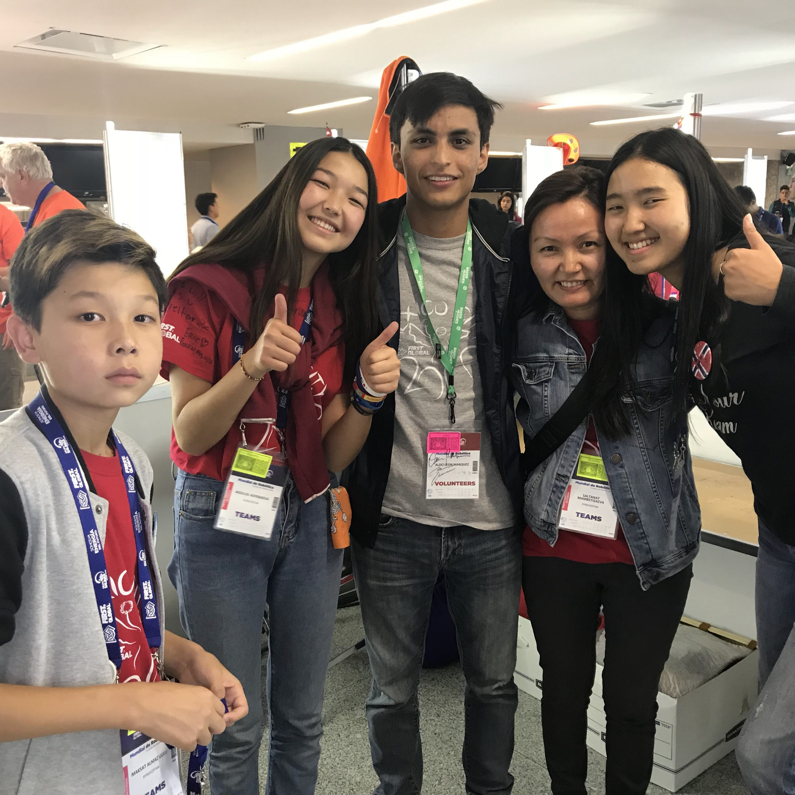
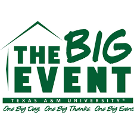

In August 2018
"First Global Challange", a robotics competition created by
F.I.R.S.T , It
took place in my hometown Mexico City where I volunteered as
a "Team Ambassador" for the teams Kyrgyzstan, Madagascar and partially
team France.

In March 2019 I Participated in the anual Big Event of Texas A&M,
In this event I participated with a team in helping out a resident of Bryan